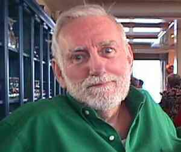

Monday, March the 6th, 2006
back to: title, date or indexes
Was Dobson a visionary? William Blake saw an angel in a tree in Peckham. Dobson, so far as we know, never went to Peckham. But did he see other angels, in other trees, elsewhere? If he did, he never wrote about them. He wrote about all sorts of things—propellers, dust, ringworm, Rod McKuen, spillages, gloom and magnetism, for example.
Dobson's pamphlet on Rod McKuen is one of his most extraordinary works. He took a single line from a poem by the gravel-voiced bard of sentimental pap and spun from it a dizzying exegesis. The critic Lavender Thule has praised Dobson's essay as the verbal equivalent of a bebop jazz improvisation, although as she is profoundly deaf, and has been since birth, one wonders how she arrived at this conclusion. One wonders, too, why she treasures a crumpled photograph of the jazz-obsessed armaments manufacturer Chevenix Peaglue on the back of which she has scribbled an illegible couplet.

Hedgehog lover Rod McKuen
The line Dobson chose as the starting point for his majestic pamphlet is from Rod McKuen's poem “Mornings Enough”, where the cloying versifier writes: The hedgehog grumbling back to darkness is known by me and loved by me. In sweeping prose. Dobson notes that sleeping hedgehogs are often torn to pieces by badgers, and ponders on savagery in the world of small mammals. Would McKuen, he asks, declare his love for a badger with bloody fangs, fresh from gorging itself on the entrails of a recently-slaughtered hedgehog? From there, the out of print pamphleteer poses a series of questions about love, badgers, blood, gravel pathways, wax, being unstinting about something, pantomime, poisonous toads, The Duchess of Malfi, gloves, fruit with pips, fruit without pips, and the methods we use to measure horses. It is a bravura performance, even though Dobson refuses to answer any of the questions he raises.
Indeed, on page sixty-six he writes “I refuse to answer any of these questions. You can put me in a sack and seal the sack with knotted rope, and fling the sack containing me into a dark and horrible pond, or even into the vast abominable sea, but I shall remain steadfast in my silence!!!”
Why did Dobson choose to end that sentence with three exclamation marks? Do I know the answer to that question? If I do, will I tell you? Or will I, like Dobson, invite you to put me in a sack and seal the sack with knotted rope, and fling the sack containing me into a dark and horrible pond, or even into the vast abominable sea?
Hooting Yard on the Air, March the 22nd, 2006 : “Squirrels : Emissaries From the Beyond?” (starts around 22:22)